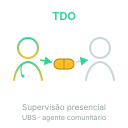

Três meses. Doze doses. Uma por semana, em jejum, na UBS com observação. Lucita sai com orientação clara: a urina pode ficar alaranjada — o esquema funciona.
Decisão
Esquema 3HP escolhido por adesão
Lucita pesa 58 kg → faixa ≥ 50 kg → posologia:
Rifapentina 900 mg + Isoniazida 900 mg, juntas, em jejum;
1 dose por semana, durante 3 meses;
12 doses totais;
TDO opcional — atendimento semanal na UBS facilita supervisão (1 ida/semana, 12 semanas) e reforça adesão em contactante de alto risco.

Alerta
Avisar ANTES da prescrição: coloração alaranjada
Rifapentina (mesma família da rifampicina) causa coloração alaranjada de urina, suor, lágrimas e lentes de contato. É efeito cosmético, inofensivo, esperado — desaparece quando o esquema termina.
Avisar antes da prescrição evita susto telefônico, evita suspensão por engano e evita abandono. É a mesma orientação que Mariana recebeu sobre a rifampicina em A3.
Mecanismo
Vigilância de hepatotoxicidade
Rifapentina pode causar elevação de transaminases — geralmente leve, transitória, sem repercussão clínica em adulto sem fator de risco hepático prévio.
Orientação operacional pra Lucita:
Função hepática basal antes de iniciar (TGO, TGP, bilirrubinas, INR);
Reavaliação se sintomas (não rotineira em assintomática);
Sinais de alerta a relatar imediatamente: anorexia + náusea + dor abdominal alta + icterícia.
Hepatotoxicidade significativa é incomum em adulto jovem sem fator hepático prévio. Em paciente com hepatopatia prévia ou álcool pesado, considerar 4R como alternativa (menos hepatotóxico que isoniazida ou 3HP combinado).
Conceito
Seguimento e desfecho esperado
Semana 1-12: dose semanal supervisionada na UBS; orientação reforçada a cada visita;
Semana 12: 12ª dose → conclusão do tratamento;
Pós-tratamento: avaliação clínica simples; PPD não é repetido (resposta imune persiste — não muda conduta);
Desfecho: prevenção da progressão pra TB ativa nos próximos 2 anos (janela crítica). Eficácia esperada do 3HP: 82-90 %.
Recuperação ativa · 1 · Lucita
Por que o esquema 3HP (rifapentina + isoniazida semanal por 3 meses) é o preferido em vez de isoniazida diária por 9 meses?
Por adesão. Os dois esquemas têm eficácia semelhante em ensaios clínicos, mas a operacionalidade é radicalmente diferente:
3HP: 12 doses semanais em 3 meses — supervisionável, adesão alta, esquema curto, paciente vê o fim;
Isoniazida 9 meses: 270 doses diárias — atrito alto, adesão tende a despencar nos últimos meses, abandono frequente.
Adesão é o fator clínico determinante do sucesso do tratamento de ILTB. Esquema com adesão de 90 % e eficácia 85 % bate esquema com eficácia 90 % e adesão 50 %.
3HP só é contraindicado em alguns cenários específicos (interações com TARV em HIV+ com inibidores de protease, intolerância prévia a rifamicinas, gestação no 1º trimestre — verificar caso a caso).
Recuperação ativa · 2
Qual orientação operacional sobre coloração alaranjada deve ser dada antes da primeira dose do 3HP e por quê?
Avisar antes da prescrição: a rifapentina (mesma família da rifampicina) causa coloração alaranjada de urina, suor, lágrimas e lentes de contato. É efeito cosmético, inofensivo, esperado — desaparece quando o esquema termina.
Por que avisar antes:
Evita susto telefônico: paciente sem aviso liga assustado vendo urina laranja;
Evita suspensão por engano: sem aviso, paciente pode interpretar como reação grave e suspender espontaneamente;
Evita abandono: pessoa que tem reação inesperada e "perigosa" perde confiança no esquema;
Reforça adesão: aviso explícito sinaliza que o efeito é conhecido e esperado, o que aumenta confiança no tratamento.
É exatamente a mesma orientação que Mariana recebeu sobre a rifampicina em A3 — funciona em ambos os fármacos da mesma família.